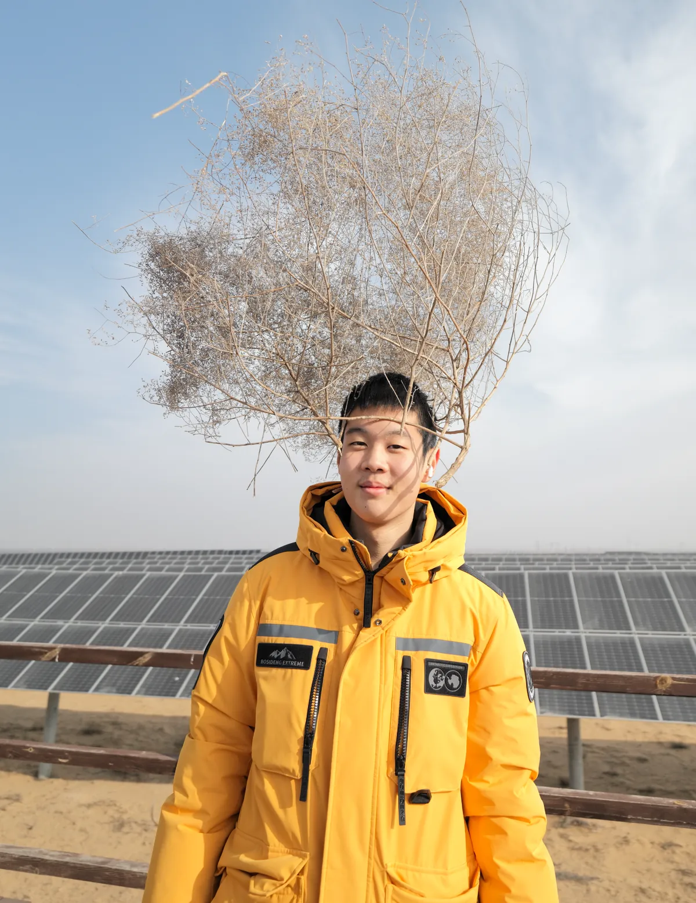

Researcher · Filmmaker · Builder
I study catalysts — not just reactions, but change.

Lifestyle photo — pick one:
A) Cycling on a mountain road, helmet on, skyline behind
B) In the Mu Us Desert with camera, solar panels and sheep behind
C) Group photo with club members doing experiments
Horizontal, min 800×600px, natural smile.
I'm a student at BFSU Affiliated High School in Beijing, spending most of my time between a chemistry lab and a video editing timeline.
My research started with a question about catalysts — how tiny amounts of platinum can transform waste glycerol into something useful. That question led me to a Peking University lab, a first-author paper, and eventually to the Mu Us Desert, where I discovered that the biggest catalyst isn't always a molecule.
When I'm not in the lab, I'm probably on my bike. I ride about 2,000 km a year — it's how I think. Some of my best ideas about reaction mechanisms came somewhere around kilometer 40.
Chapter 01
From a Peking University laboratory to an international research platform — building depth in catalysis, materials, and computational chemistry.
Choose one:
A) Operating XRD/TEM in the PKU lab — side profile, focused
B) Presenting at the Yingcai Conference — on stage, confident
C) Defending at a competition — poster or slide behind
D) Experiment bench close-up — catalyst samples, reagent bottles
Wide horizontal, min 1200×400px.
National Yingcai Program · Peking University · 2024–2025
Selected for China's national Yingcai (Talents) Program, co-administered by the China Association for Science and Technology and the Ministry of Education — one of approximately 1,800 students chosen nationwide through a three-stage screening process.
At the Peking University Department of Geosciences, I independently operated XRD, TEM, and XPS to characterize Pt-Fe-CeO₂ catalysts for glycerol oxidation. The resulting first-author manuscript was published in the Journal of Student Research.
~1,800 / year
From 25 cities · 58 universities
1st Author
Journal of Student Research
2025 – 2026
Yau Science Award · Tsinghua University
Built a physics-embedded AI system to screen 5,000+ natural polyphenol molecules for lithium battery electrolyte additives — replacing toxic VC/FEC with green alternatives. Embedded quantum chemistry parameters (HOMO/LUMO, dipole moment) into the model, reducing blind experimentation from 500 weeks to 3 targeted validations.
Summer 2025
Stanford University
Completed an intensive 8-week residential program at Stanford, conducting faculty-mentored research and collaborating with peers from around the world. Secured a recommendation letter from a Stanford professor.
photons + sand PV→ grass + sheep
“I used to see photovoltaic power and desertification control as unrelated worlds — one about electrons, the other about ecosystems.”
From my Stanford application essay
Chapter 02
Where catalysis meets ecology, and a laboratory concept transforms into a story about people, land, and technology.
Iconic frame from the film — sheep under solar panels at golden hour in the Mu Us Desert. Or: Guowei filming in the desert with camera. Ultra-wide, min 1920×800px, golden/warm tones. Dark gradient overlay will be applied.
GENIUS Olympiad Gold Medal · 2026
A Catalyst for Ecological Restoration · 5:56
An award-winning short film exploring agrivoltaics in the Mu Us Desert. Solar panels reduce infrared radiation by 82%, lowering the activation energy for natural ecological recovery while creating new livelihoods for local herders.
One of only two projects selected from mainland China for the GENIUS Olympiad international finals.
The Four Questions
Conquest or shield? Bond or barrier? Hope or ash? Catalyst or product?Gold
GENIUS Olympiad 2026
82%
IR Radiation Reduced
1 of 2
From mainland China
5:56
Four narrative layers
“The desert is healing, and technology — technology is just the catalyst.”
— The Solar Shepherd, closing narration
Behind the Scenes
Herdsman's smile — close-up portrait of the local shepherd, weathered face, genuine laugh. The "less sand, fatter sheep" moment.
Vast solar panel array stretching to the horizon, desert sand, dramatic sky. Scale and grandeur.
Artemisia growing under panels — close-up of green plants in sand, panel shadow visible. The 30% moisture difference, visualized.
Guowei interviewing or measuring in the field — dusty, windblown, holding equipment or notebook. The reality of fieldwork.
Sheep grazing under solar panels — the iconic image. Silicon above, livestock below. Golden hour light preferred.
knowledge sharing→ acceleration
“Less sand. More grass. Fatter sheep.”
— The shepherd, Mu Us Desert
Chapter 03
Building tools and communities that make science accessible — because knowledge accelerates faster when shared.
Club members around a lab bench, or filming a science video together. Horizontal, min 600×300px.
ChemAI 101 app screenshot — the chat interface with a chemistry question and AI explanation. Show the UI in action.
Recognition
A track record across research, film, and academics.
The Network
Live demos, open-source code, and photography — every project I maintain is reachable from this page. Start anywhere.
The real code behind every demo on this page — read it, fork it, build on it.
No setup, no clone — every product opens straight in your browser.
Research Demo
Interactive showcase of the Pt–Fe/CeO₂ catalyst experiments behind my first-author glycerol oxidation paper.
lab.guoweiwang.com
AI Tool
A Gemini-powered chemistry calculator that doesn't just compute — it explains the reaction, step by step.
chemai101.guoweiwang.com
Web App
The public face of the BatteryChem core — screen electrolyte formulations in your browser, no Python required.
BatteryChem-AI-Web
Photography
Landscapes, birds, and quiet observation — learning to notice, shot by shot.
photo.guoweiwang.com
Film
GENIUS Olympiad Gold–winning short film on agrivoltaics in the Mu Us Desert · 5:56.
youtube.com
Open Source
All repositories, commits, and work-in-progress experiments live under one profile.
github.com/GuoweiWang27